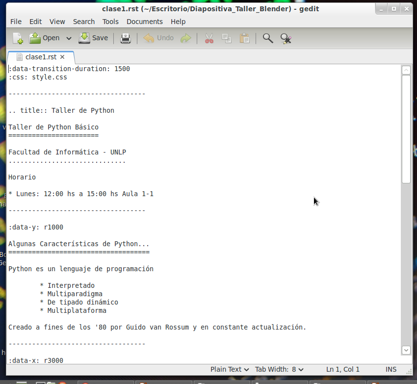
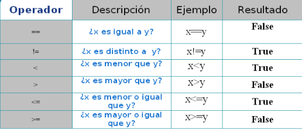

Taller de Python Básico
Facultad de Informática - UNLP
Horario
- Lunes: 12:00 hs a 15:00 hs Aula 1-1
Algunas Características de Python...
Python es un lenguaje de programación
- Interpretado
- Multiparadigma
- De tipado dinámico
- Multiplataforma
- Case Sensitive
Creado a fines de los '80 por Guido van Rossum y en constante actualización.

Existe una gran comunidad para este lenguaje, permitiéndonos encontrar ayuda ya sea en su propia documentación, en la wiki online o en diversos foros. Por lo que no habrá problemas que no podamos resolver.
Sirve Para Algo ?
Python es usado en diversas empresas o programas, como por ejemplo:
- Yahoo
- NASA
- IBM
- etc...
Y en algo que podamos ver ?
Un ejemplo rápido sería esta diapositiva, la cual fue realizada con hovercraft 1.1, desarrollado en Python 3.2.
Permitiéndonos hacer presentaciones de impress.js usando reStructuredText sin tocar ni una línea de HTML.
Ejemplo:
--> Contenidos del curso <--
- Variables (Tipos básicos y colecciones)
- Estructuras de Control
- Modulos y Funciones
- Archivos
Comentarios
Saber comentar nuestro código es muy importante. Podemos comentar un texto de 2 formas diferentes.
- Comentar una línea:
# Hola, soy un comentario de una sola linea.- Comentar varias lineas
"""Y yo,
Soy Un comentarios
de varias
lineas"""Funciones Útiles
type(dato) #Devuelve el tipo de dato, ideal para hacer debugging input("Mensaje") #Guardamos la entrada del teclado help(dato) #Obtendremos toda la info y métodos sobre el tipo de dato. exit() #Salimos de Python :D
Variables
Las variables representan valores. Por ejemplo:
x = 3
En este caso, x representa o referencia al dato entero 3.
Las variables en Python No se Declaran y los nombres de las mismas pueden contener letras y números (también "_"). Eso si, deben de comenzar con una letra.
Variables
Las asignaciones de las variables en python pueden realizarse de a varias al mismo tiempo, de la forma:
a = b = c = 99
o
a, b, c = 10, 20, 30
Todas son formas válidas de asignar valores a las variables. Recordar que la legibilidad de un programa es muy importante.
Como python es Case Sensitive, no es lo mismo la variable X que x.
Tipos de Datos
- Básicos
- Numéricos
- Enteros
- Flotantes
- Conplejos
- Booleanos
- Strings
- Colecciones
- Listas
- Tuplas
- Diccionarios
- Conjuntos (Set)
Tipos Numéricos
- Enteros:
x = 3 y = 9873
- Flotantes:
x = 1.4 y = 123.34221
- Complejos
# No vamos a verlos en el curso :D x = 1j
Operaciones Numéricas
Variables Numéricas
- Suma a + b
- Resta a - b
- Multiplicación a * b
- Potencia a**b
- División Entera a // b
- Resto de la División a % b
Nivel Bit
- And &
- Or |
- Xor ^
- Not -
- Despl Izq <<
- Despl Der >>
Booleanos
Pueden contener solo dos valores: True o False
# Si.. x = 1 y = 2
Las operaciones igual, distinto, menor, menor igual, mayor, mayor igual devuelven booleanos.
Strings
Los Strings son cadenas de carácteres (números, letras, símbolos..)
Podemos declararlos con comillas simples ' ' o dobles ""
x = "Hola " y = 'Mundo'
Podemos:
#Concatenación print(x + y) #Repetición print(x * 5)
Si queremos Escapar un símbolo usamos .
#Estamos Escapando la comilla en si. print("Hola \"Mundo\"")
Strings
Podemos usar los mismos operadores de comparación de los números, con los strings (==, !=, <, >, >=, <=). El orden es alfabético.
Para esto, python utiliza el código ASCII de cada caracter para saber su orden.
Por lo que:
"casa" < "caso"
Dará como resultado True. Python compara carácteres por su orden.
Strings
Funciones útiles:
- ord() Nos devuelve el ASCII del caracter
- chr() Nos pasa el caracter del numero ASCII que pasemos
- int() Convierte un String en Entero
- float() Convierte un String en Flotante
- str() Convierte un Número en String
- len() Longitud del String
ord("a") #Devuelve 97 chr(97) #Devuelve "a" int("123") #Devuelve el número 123 float("123") #Devuelve el número 123.0 str(123) #Devuelve el String "123" len("Hola") #Devuelve 4
Dado:
a = "Hola Mundo" a.lower() #Devuelve el String pero en minúscula a.upper() #Devuelve el String pero en mayúscula
Estructuras de Datos
Veremos
- Listas
- Tuplas
- Diccionarios
- Conjuntos(Sets)
Cada estructura de datos cuenta con sus características especiales.
Listas
Una lista es una estructura de datos Heterogénea, Ordenada e Indexada. Pueden cambiar su contenido (tipos de datos) y tamaño en tiempo de ejecución.
Ejemplo:
myLista = [12, 34.0, "Hola Mundo", [1, 2], True]
Podemos acceder a los elementos de la lista a través de los []:
print("El elemento 0 de la lista es: " + myLista[0])
El primer elemento de la lista se encuentra en la posición 0.
Podemos asignar valores también con []
# Reemplazamos el valor 34.0 por el booleano False myLista[1] = False
Listas
Si queremos acceder a la lista dentro de myLista, se utilizan otro juego de []
myLista = [1, [True, 2]] #Imprimimos el True print(myLista[1][0])
Así como accedemos a la lista con ínidices positivos, también podemos hacerlo con índices negativos.
lista = [1, 2] print(lista[-1]) #Imprime 2
Listas
Slicing
El Slicing nos permite obtener sublistas de una lista. Para eso, debemos de indicar el elemento inicio y el fin. El fin debe de ser +1 a la posición del elemento que queremos
lista = [1, 2, 3, 4] print(lista[1:3])
Podemos obviar el inicio o final y python tomará las posiciones de inicio o fin por defecto. lista[:3] == lista[0:3]
EL slicing también nos permite modificar la lista.
lista = [1, 2, 3, 4, 5] lista[0:2] = [1] #Reemplazamos esa sublista por el 1. print(lista)
Listas
Copiado
Puede ser tentador realizar lista1 = lista2, esto hará que las dos variables apunten a la misma posición en memoria, por lo que si cambiamos elementos desde lista, también se verá esto reflejado en lista2.
Para copiar, hacemos uso de la función copy().
lista1 = [1, 2] lista2 = [] #Lista vacía lista2 = lista1.copy() #Copiamos lista 1. lista2 = lista1[:] #También estamos copiando lista 1.
Podemos también "concatenar" listas como con string, también multiplicar.
lista1 = [1, 2] lista2 = lista1 + [3, 4] lista2 = lista1 * 2
Listas
Podemos Extender la lista con la función extend() agregando elementos al final o append() para agregar un elemento al final.
Eliminar Elementos
lista = [1, 3, 55, 55] del lista[2] #Elimina el elemento en la posición 2 de la lista lista.remove(55) #Elimina la primera ocurrencia del elemento. elemento = lista.pop(0) #Elimina y me devuelve el elemento en la posición 0
Más funciones Útiles
lista.count(X) #Nos devuelve las ocurrencias de X en la lista len(lista) #Cantidad de elementos en la lista lista.index(X) #Posición del elemento X en la lista.